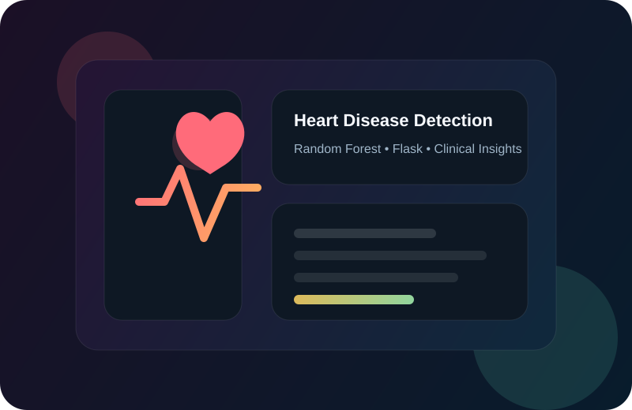
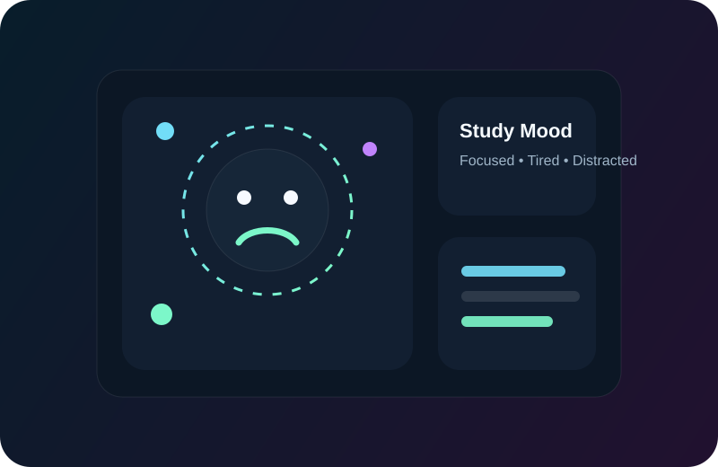
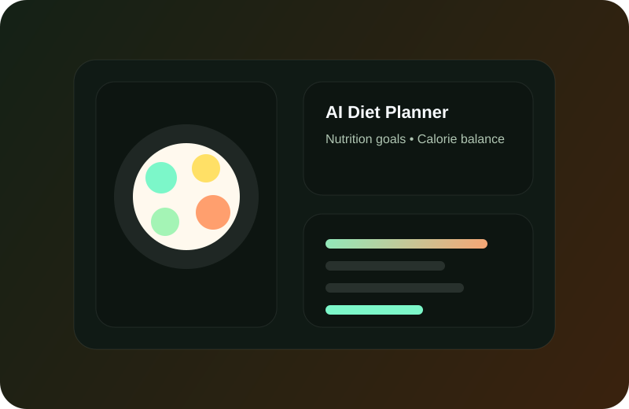
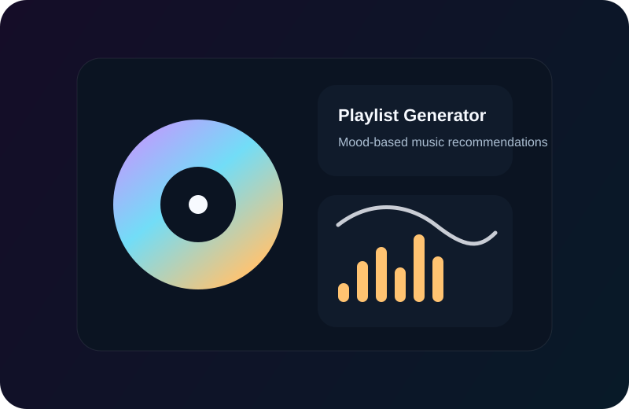

AI / ML Portfolio
Guruprasad Potdar building machine learning products that are easy to evaluate, explain, and trust from model logic to polished delivery.
- Machine learning ideas turned into recruiter-ready case studies
- Standalone demos with visible proof, not only concept slides
- Practical AI products presented with cleaner interfaces and clear value
20-Second Intro
A quick voice intro makes the portfolio feel more personal without slowing it down.
Voice Intro
Hear the short portfolio pitch
- Quick overview of focus and flagship work
- More personal than plain text alone
- Useful for first-time visitors and recruiters
Share Preview
Prepared for WhatsApp and LinkedIn sharing
- Cleaner share card for WhatsApp and LinkedIn
- Favicon and social preview image already prepared
- Ready for a future custom-domain launch
Recruiter Quick View
One screen that answers the fastest hiring questions.
Skills
ML + data + UI delivery
- Python, scikit-learn, Flask, HTML, CSS, JavaScript
- Dataset handling, classical ML, recommendation logic
- Portfolio-grade demo delivery and proof packaging
Flagship Project
Heart Disease Detection System
- Healthcare screening use case
- Notebook + training script + Flask app
- Best end-to-end story in the portfolio
Results
Visible metrics, not generic claims
- Study Mood: 31.37% broad-state accuracy
- Diet Planner: 85.71% preference match
- Playlist Generator: 77.41% label accuracy
Resume + Contact
Ready for recruiter follow-up
Results + Research
New proof surfaces make the portfolio easier to review quickly.
Results Dashboard
Metrics, comparison, confusion proof, and exportable evidence
- Project comparison table
- Dataset scale and benchmark cards
- Case-study PDF export links
Research & Notebooks
Experiments, scripts, lessons learned, and supporting files
- Notebook and training-script access
- Model-trial summaries
- Lessons learned from each project family
Flagship Project
Heart Disease Detection is positioned as the portfolio centerpiece.
Why It Leads
Strongest end-to-end story in the portfolio.
- Real clinical-style dataset and saved model workflow
- Multiple ML algorithms tested in one project path
- Notebook, Flask app, and product-style presentation together

5 algorithms compared
Notebook included
Flask app included
Printable report flow
Dataset Proof
Local clinical dataset file
pngm/dataset/heart_data_set.csv is available directly inside the project.
Notebook Proof
Model experimentation notebook
pngm/Heart-Disease-Prediction.ipynb is linked in the case study.
App Proof
Live Flask interface
The HDD project includes a dedicated Flask app and a portfolio-side demo wrapper.
Flagship Video Walkthrough
A short product-style visual makes the flagship project more memorable.
Why it helps
- Shows the heart-disease workflow as a product, not only as text
- Makes the flagship project easier to remember in short reviews
- Pairs well with the case-study PDF and live demo links
Case Studies
Every project now has a stronger proof path, not just a short card.
Heart Disease Detection System
Dataset-backed ML screening app with Flask delivery, notebook proof, and case-study documentation.

AI Study Mood Detector
Image-dataset-backed focus coach with broad-state mapping, confusion matrix proof, and a live demo.

AI-Powered Diet Planner
Recommendation-oriented nutrition planner with local datasets, cluster logic, and planning-board delivery.

Mood-Based Playlist Generator
278k-track audio-feature classifier turned into a music curation demo with export and sharing actions.
Why Hire Me
Short reasons a recruiter or client can act on quickly.
End-to-end delivery
I do not stop at model logic. I package the work into something visible, reviewable, and easier to trust.
Proof-backed projects
Each featured build now shows datasets, saved metrics, scripts, demos, or notebooks instead of generic claims.
Clear presentation
Technical work is translated into case-study pages, cleaner writing, and recruiter-friendly structure.
Experience Timeline
A cleaner view of academic growth, project depth, and current direction.
Diploma completed
Completed a diploma in Artificial Intelligence and Data Science and built an early technical foundation.
Bachelor's in progress
Currently pursuing the degree in Artificial Intelligence and Data Science while building stronger project systems.
Standalone demo apps
Expanded projects into working themed demos and standalone app folders for stronger portfolio proof.
Recruiter-ready positioning
Upgraded the portfolio into a case-study and service-led presentation with stronger proof, trust signals, and resume polish.
Credentials and Trust Signals
Signals that help the portfolio feel more serious before a conversation even starts.
AI
Academic Credential
Diploma in Artificial Intelligence and Data Science
Provider: Academic program
Status: Completed
DS
Academic Credential
Bachelor's in Artificial Intelligence and Data Science
Provider: Undergraduate program
Status: In progress, currently in 2nd year
PR
Project Proof
Live demos + notebooks + datasets
Provider: Portfolio evidence
Includes standalone demos, metrics files, datasets, and a printable resume.
GitHub Profile
Visible code identity
Custom Domain Ready
Suggested public address
guruprasadportfolio.in
The site is ready for publishing with a custom domain once deployed.
Share Ready
WhatsApp and LinkedIn preview polish
Favicon, Open Graph image, and cleaner metadata are now built into the portfolio pages.
GitHub Proof
Visible code identity, proof files, and project build evidence.
GitHub Profile
Primary public code identity
Notebook Proof
Jupyter + training artifacts
Notebook, scripts, metrics files, and datasets are linked directly from the case studies and research page.
Latest build evidence
Static pages + Flask path
The portfolio combines front-end proof pages, standalone demos, and a separate Flask-backed heart-disease application.
What I Build
A dedicated services page now explains the kind of work this portfolio supports.
Service Tracks
- ML model development
- AI prototype apps
- Data analysis systems
- Flask dashboards
- Intelligent web apps
Next Step
Contact
Ready to talk through an AI project, internship, or prototype build.
Available for AI / ML collaboration, product-style demo systems, data-driven builds, and recruiter conversations.